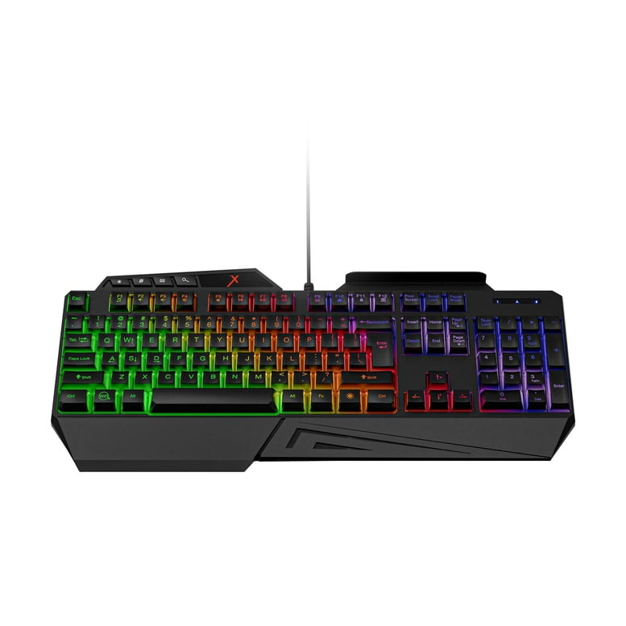
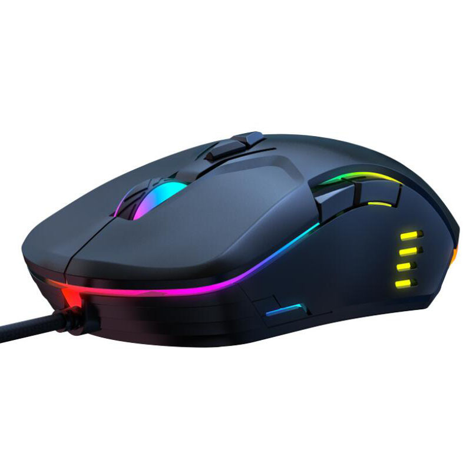
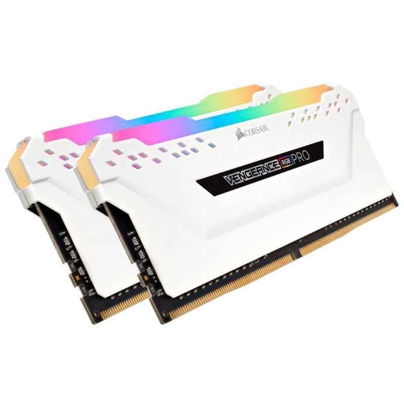
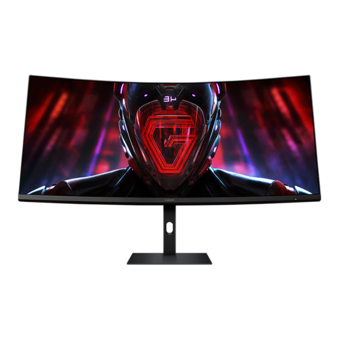
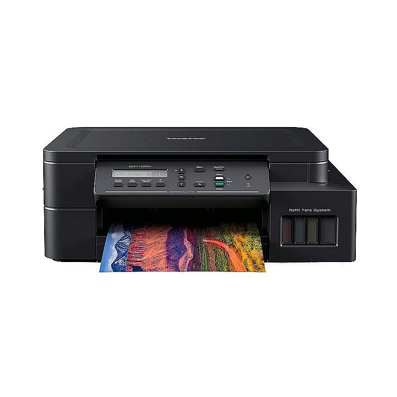

Perangkat Input

Keyboard
Keyboard adalah perangkat input yang digunakan untuk memasukkan data berupa teks dan perintah ke dalam komputer.

Mouse
Mouse adalah perangkat input yang digunakan untuk mengontrol kursor pada layar komputer, serta untuk memberikan perintah dengan klik.
Perangkat Proses

Processor
Processor adalah otak komputer yang bertugas memproses data dari perangkat input dan mengirimkan hasilnya ke perangkat output.

RAM
RAM adalah memori sementara yang digunakan oleh processor untuk menyimpan data yang sedang diproses.
Perangkat Output

Monitor
Monitor adalah perangkat output yang digunakan untuk menampilkan hasil pemrosesan data dalam bentuk visual.

Printer
Printer adalah perangkat output yang digunakan untuk mencetak data dari komputer ke dalam bentuk fisik, seperti kertas.